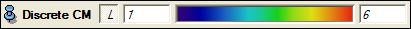

Ports

See the description of MolSurfaceView's base class for an explanation of the first four ports.
There are three color modes. The first mode uses default colors to color the outside triangles differently than the inside triangles. If one or two molecules are connected to the MolSurfaceView, you can choose the second mode to color the molecular surface according to the coloring component(s). The last mode, finally, allows you to color the surface by use of a scalar field (representing chemical or physical properties). This mode can only be chosen if the ColorField port is connected to a field.
You can change the behavior of the pick action by selecting one of three modes. If the first mode, molecule, is selected, left-clicking on the surface highlights the selected parts of the surface, while picking with the middle mouse button leads to information about the picked atom(s) being displayed in the upper left corner of the viewer. If clipping is selected, left-clicking on the surface clips all those parts of the surface further away than the value specified by the clipping distance. Finally, if the mode surface is selected, the behavior will be like this in the SurfaceView.
This port provides functionality for selecting (or highlighting) atom surface patches in the viewer window. For more information, see the general section on highlighting.
This port is the front end to a filter that determines the atom surface patches being displayed by the MolSurfaceView. The functionality of the port's buttons are described in the general section on highlighting.



The four ports above belong to the coloring component. There will be one component for each molecule connected to the MolSurfaceView.